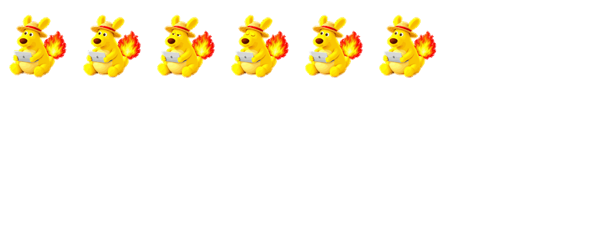
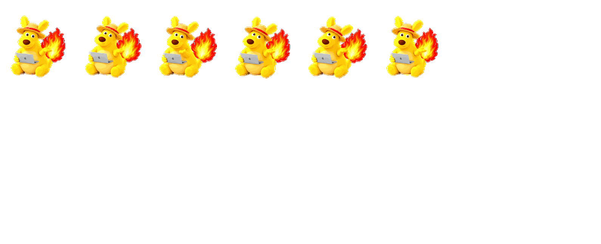
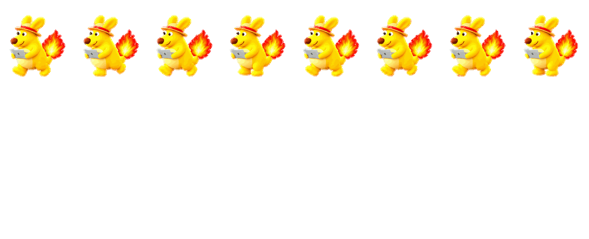
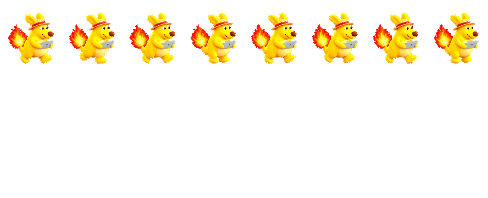
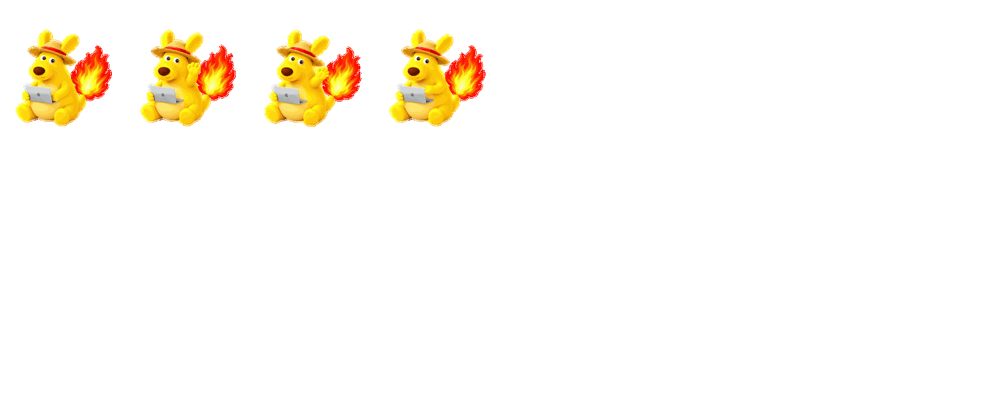
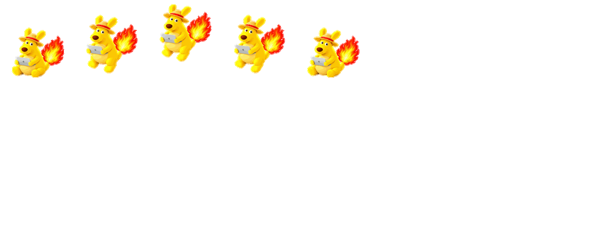
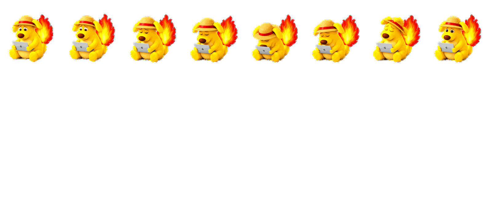
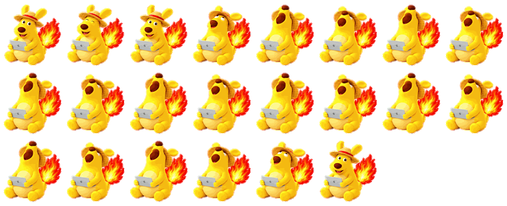
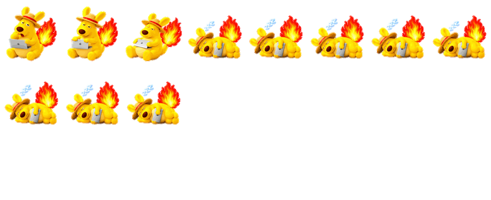

03 / FRAME BY FRAME动作分镜与素材下载
分镜按播放顺序排列；每个动作都可以下载 GIF 和 PNG。庆祝、睡眠是扩展演示，庆祝仍为草稿。
空闲 原生 · 展开分镜与下载

下载 GIF · 下载分镜 PNG
工作 原生 · 展开分镜与下载
下载 GIF · 下载分镜 PNG
等待回答 原生 · 展开分镜与下载

下载 GIF · 下载分镜 PNG
向左移动 原生 · 展开分镜与下载

下载 GIF · 下载分镜 PNG
向右移动 原生 · 展开分镜与下载

下载 GIF · 下载分镜 PNG
挥手 原生 · 展开分镜与下载

下载 GIF · 下载分镜 PNG
跳跃 原生 · 展开分镜与下载

下载 GIF · 下载分镜 PNG
遇到问题 原生 · 展开分镜与下载

下载 GIF · 下载分镜 PNG
检查工作 原生 · 展开分镜与下载
下载 GIF · 下载分镜 PNG
完成庆祝 扩展 · 草稿 · 展开分镜与下载

下载 GIF · 下载分镜 PNG
躺下睡觉 扩展 · 展开分镜与下载

下载 GIF · 下载分镜 PNG